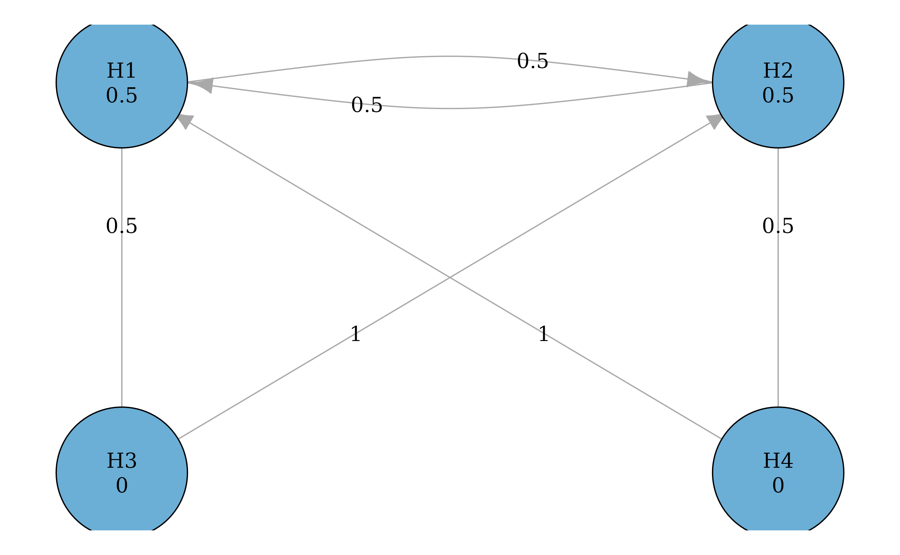
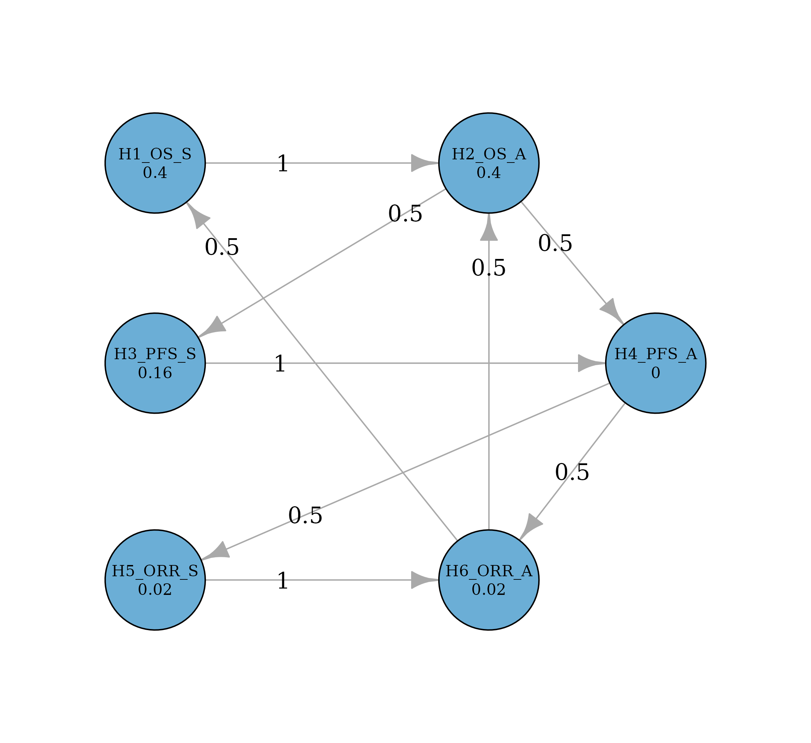

Group Sequential Design with Graphical Approaches
Source:vignettes/group-sequential-testing.Rmd
group-sequential-testing.RmdIntroduction
Group sequential designs allow for interim analyses during a clinical trial, enabling early stopping for efficacy while controlling the familywise Type I error rate (FWER). When combined with graphical multiple comparison procedures, these designs can test multiple hypotheses across multiple analyses in a structured and transparent way.
The graph_test_shortcut_gsd() function extends the
shortcut graphical testing procedure to group sequential designs. This
vignette illustrates the methodology through two case studies: a
diabetes trial from Section 4 of Maurer and Bretz (2013), and an
oncology trial adapted from the gMCPLite package
where different endpoints have different numbers of analyses.
Alpha Spending Functions
Alpha spending functions determine how the total significance level is allocated across interim and final analyses. The package provides four built-in spending functions:
-
spending_of()— Lan-DeMets O’Brien-Fleming approximation (very conservative at early analyses) -
spending_pocock()— Lan-DeMets Pocock approximation (more uniform spending) -
spending_hsd()— Hwang-Shih-DeCani family (flexible, controlled bygamma) -
spending_linear()— Linear (uniform) spending
Each function takes at least two arguments: alpha (total
significance level) and info_frac (information fraction),
and returns the cumulative alpha spent at each information fraction.
Some functions accept additional parameters, e.g.,
spending_hsd() takes a gamma parameter
controlling the spending rate.
# Compare spending at information fractions (1/3, 2/3, 1) for alpha = 0.025
t_values <- c(1/3, 2/3, 1)
spending_comparison <- data.frame(
`Info Fraction` = t_values,
`O'Brien-Fleming` = spending_of(0.025, t_values),
Pocock = spending_pocock(0.025, t_values),
`HSD (gamma=-4)` = spending_hsd(0.025, t_values, -4),
Linear = spending_linear(0.025, t_values),
check.names = FALSE
)
knitr::kable(spending_comparison, digits = 6,
caption = "Cumulative alpha spent at each analysis (alpha = 0.025)")| Info Fraction | O’Brien-Fleming | Pocock | HSD (gamma=-4) | Linear |
|---|---|---|---|---|
| 0.333333 | 0.000104 | 0.011321 | 0.001303 | 0.008333 |
| 0.666667 | 0.006048 | 0.019085 | 0.006246 | 0.016667 |
| 1.000000 | 0.025000 | 0.025000 | 0.025000 | 0.025000 |
The O’Brien-Fleming spending function is very conservative at early analyses (spending only 0.00010 at the first interim), making it a popular choice when early stopping should require very strong evidence.
From Spending to Boundaries
An important distinction: the cumulative spending at an analysis is not the nominal significance level (boundary) at that analysis. The boundary must be computed from the spending using the joint distribution of test statistics across analyses. Specifically, the Z-scale boundary satisfies:
where is the cumulative spending and follow the canonical joint distribution with for . We consider one-sided tests with the upper alternative (i.e., larger effects are better). At analysis , the null hypothesis is rejected if , or equivalently, if the observed p-value where is the standard normal CDF.
# Compute boundaries for OBF spending at alpha = 0.025 with 3 equally spaced analyses
bounds <- graphicalMCP:::gs_boundaries(0.025, c(1/3, 2/3, 1), spending_of)
boundary_table <- data.frame(
Analysis = 1:3,
`Info Fraction` = c(1/3, 2/3, 1),
`Cumulative Spending` = spending_of(0.025, c(1/3, 2/3, 1)),
`Z Boundary` = bounds$bounds_z,
`Nominal p Boundary` = bounds$bounds_nominal,
check.names = FALSE
)
knitr::kable(boundary_table, digits = 6,
caption = "OBF group sequential boundaries (alpha = 0.025)")| Analysis | Info Fraction | Cumulative Spending | Z Boundary | Nominal p Boundary |
|---|---|---|---|---|
| 1 | 0.333333 | 0.000104 | 3.710303 | 0.000104 |
| 2 | 0.666667 | 0.006048 | 2.511427 | 0.006012 |
| 3 | 1.000000 | 0.025000 | 1.993037 | 0.023129 |
Repeated and Sequential P-values
Two types of p-values are central to the group sequential graphical procedure. Let denote the repeated p-value and denote the sequential p-value at analysis .
Repeated p-value : the minimum significance level at which the group sequential boundary at analysis specifically would be crossed. It only considers the boundary at the current analysis.
Sequential p-value : the minimum significance level at which any group sequential boundary at analyses would be crossed. It equals the cumulative minimum of repeated p-values: .
The package provides repeated_p() and
sequential_p() to compute these for a single
hypothesis:
# A hypothesis tested at three analyses with OBF spending
p_h1 <- c(0.05, 0.02, 0.01)
info <- c(1/3, 2/3, 1)
# Repeated p-value at analysis 3 (considers only the boundary at analysis 3)
rep_p_3 <- repeated_p(p = p_h1, info_frac = info, spending_fn = spending_of)
cat("Repeated p-value at analysis 3:", rep_p_3, "\n")
#> Repeated p-value at analysis 3: 0.01055418
# Sequential p-value at analysis 3 (considers boundaries at all three analyses)
seq_p_3 <- sequential_p(p = p_h1, info_frac = info, spending_fn = spending_of)
cat("Sequential p-value at analysis 3:", seq_p_3, "\n")
#> Sequential p-value at analysis 3: 0.01055467
# The sequential p-value is the minimum of repeated p-values across analyses
rep_p_1 <- repeated_p(p = p_h1[1], info_frac = info[1], spending_fn = spending_of)
rep_p_2 <- repeated_p(p = p_h1[1:2], info_frac = info[1:2], spending_fn = spending_of)
cat("Repeated p-values:", rep_p_1, rep_p_2, rep_p_3, "\n")
#> Repeated p-values: 0.2578087 0.05819319 0.01055418
cat("min(rep_p_1, rep_p_2, rep_p_3) =", min(rep_p_1, rep_p_2, rep_p_3), "\n")
#> min(rep_p_1, rep_p_2, rep_p_3) = 0.01055418The sequential p-value is always less than or equal to the repeated p-value, since it considers all prior analyses. A hypothesis that nearly crossed its boundary at an earlier analysis will have a much smaller sequential p-value than its repeated p-value at the current analysis.
The graph_test_shortcut_gsd() function supports two
modes controlled by the look_back parameter. When
look_back = FALSE (the default), rejection decisions at
each analysis are based on repeated p-values only — i.e., only the
boundary at the current analysis is considered. When
look_back = TRUE, rejection decisions are based on
sequential p-values, which “look back” at all prior analyses by taking
the cumulative minimum of repeated p-values. This means that strong
evidence from an earlier analysis is carried forward and can contribute
to a rejection at a later analysis. Both modes are illustrated in the
case studies below.
Case Study using repeated p-values and look_back = FALSE
We replicate the numerical example from Section 4 of Maurer and Bretz (2013). This is a diabetes trial with two preplanned interim analyses comparing two doses (low and high) against placebo for two hierarchically ordered endpoints (HbA1c and body weight).
Hypotheses and Graph
The trial has four hypotheses:
- : Low dose vs. placebo for HbA1c (primary)
- : High dose vs. placebo for HbA1c (primary)
- : Low dose vs. placebo for body weight (secondary)
- : High dose vs. placebo for body weight (secondary)
The testing strategy follows the successiveness principle: secondary hypotheses cannot be tested until their parent primary hypothesis is rejected. Both primary hypotheses start with equal weight (0.5 each), and upon rejection, the weight is split equally between the other primary hypothesis and the corresponding secondary hypothesis.
hypotheses <- c(0.5, 0.5, 0, 0)
transitions <- rbind(
c(0, 0.5, 0.5, 0), # H1 -> H2 (1/2), H3 (1/2)
c(0.5, 0, 0, 0.5), # H2 -> H1 (1/2), H4 (1/2)
c(0, 1, 0, 0), # H3 -> H2 (full propagation)
c(1, 0, 0, 0) # H4 -> H1 (full propagation)
)
g <- graph_create(hypotheses, transitions)
plot(g, vertex.size = 40)
Observed P-values
The trial has three planned analyses at equally spaced information fractions . The O’Brien-Fleming spending function is used for all hypotheses. We assume the trial stops after the second interim analysis (based on the results obtained). Since only two analyses are conducted, we pass the p-values and information fractions for those two analyses only.
# P-values from Table 1 of Maurer and Bretz (2013)
# Only analyses 1 and 2 are conducted (trial stops after analysis 2)
p <- rbind(
H1 = c(0.0062, 0.0002),
H2 = c(0.017, 0.0035),
H3 = c(0.009, 0.002),
H4 = c(0.13, 0.06)
)
p_display <- as.data.frame(p)
colnames(p_display) <- paste("Analysis", 1:2)
knitr::kable(
p_display,
caption = "Observed nominal p-values"
)| Analysis 1 | Analysis 2 | |
|---|---|---|
| H1 | 0.0062 | 0.0002 |
| H2 | 0.0170 | 0.0035 |
| H3 | 0.0090 | 0.0020 |
| H4 | 0.1300 | 0.0600 |
Running the Procedure (look_back = FALSE)
The default mode is look_back = FALSE, which means the
procedure does not look back at test statistics from
prior analyses. At each analysis
,
rejection decisions are based solely on the repeated p-value
computed from the test statistic at analysis
,
without utilizing test statistics from previous analyses. Note that the
test statistic at analysis
is computed from all data accumulated up to that point, but the
rejection decision at analysis
does not incorporate the test statistics (or repeated p-values) from
analyses
.
There are two equivalent ways to understand the rejection decisions:
-
Repeated p-values (default): The repeated p-value
is the minimum significance level at which the group sequential boundary
at analysis
would be crossed. These are passed to the graphical shortcut procedure
(
graph_test_shortcut()) for multiplicity adjustment. -
Nominal boundaries
(
test_values = TRUE): At each analysis, the observed p-value for each hypothesis is compared against its nominal boundary, which depends on the hypothesis’s current weight in the graph and the spending function.
Both approaches lead to exactly the same rejection decisions — they are two views of the same procedure.
Repeated p-values
A repeated p-value at analysis
is computed using repeated_p():
info_frac <- c(1/3, 2/3)
rep_p_matrix <- matrix(NA, nrow = 4, ncol = 2,
dimnames = list(rownames(p), c("Analysis 1", "Analysis 2")))
for (j in 1:4) {
for (k in 1:2) {
rep_p_matrix[j, k] <- repeated_p(
p = p[j, 1:k],
info_frac = info_frac[1:k],
spending_fn = spending_of
)
}
}
knitr::kable(rep_p_matrix, digits = 4,
caption = "Repeated p-values at each analysis")| Analysis 1 | Analysis 2 | |
|---|---|---|
| H1 | 0.1141 | 0.0024 |
| H2 | 0.1682 | 0.0172 |
| H3 | 0.1315 | 0.0116 |
| H4 | 0.3820 | 0.1285 |
We now walk through the procedure analysis by analysis using repeated
p-values. At each analysis, the repeated p-values are passed to
graph_test_shortcut() for multiplicity adjustment. The
shortcut procedure rejects hypotheses in order of increasing adjusted
repeated p-values. Newly rejected hypotheses are removed from the graph
before proceeding to the next analysis.
Analysis 1. The initial graph has weights . The repeated p-values are all large (the OBF spending function allocates very little alpha to the first interim), so no hypothesis is rejected. The graph is unchanged.
Analysis 2. The repeated p-values at this analysis are much smaller. The graphical shortcut procedure rejects first, updates the graph to propagate ’s weight, then rejects , followed by . ’s repeated p-value remains too large, so it is retained. The rejection sequence at analysis 2 is: .
Running graph_test_shortcut_gsd() performs these steps
automatically:
result <- graph_test_shortcut_gsd(
graph = g,
p = p,
alpha = 0.025,
info_frac = info_frac,
spending_fn = spending_of,
look_back = FALSE,
test_values = TRUE
)
print(result)
#>
#> Test parameters ($inputs) ------------------------------------------------------
#> Initial graph
#>
#> --- Hypothesis weights ---
#> H1: 0.5
#> H2: 0.5
#> H3: 0.0
#> H4: 0.0
#>
#> --- Transition weights ---
#> H1 H2 H3 H4
#> H1 0.0 0.5 0.5 0.0
#> H2 0.5 0.0 0.0 0.5
#> H3 0.0 1.0 0.0 0.0
#> H4 1.0 0.0 0.0 0.0
#>
#> Alpha = 0.025
#>
#> Information fractions
#> Analysis_1 Analysis_2
#> H1 0.3333333 0.6666667
#> H2 0.3333333 0.6666667
#> H3 0.3333333 0.6666667
#> H4 0.3333333 0.6666667
#>
#> P-values
#> Analysis_1 Analysis_2
#> H1 0.006200 0.000200
#> H2 0.017000 0.003500
#> H3 0.009000 0.002000
#> H4 0.130000 0.060000
#>
#> Spending functions
#> H1: O'Brien-Fleming
#> H2: O'Brien-Fleming
#> H3: O'Brien-Fleming
#> H4: O'Brien-Fleming
#>
#> Look back = FALSE
#>
#> Test summary ($outputs) --------------------------------------------------------
#> Hypothesis Adj.p* Reject Tested.at First.Rej.at Last.Rej.at Look.back
#> H1 0.004787 TRUE 2 2 2 FALSE
#> H2 0.022881 TRUE 2 2 2 FALSE
#> H3 0.023297 TRUE 2 2 2 FALSE
#> H4 0.128460 FALSE 2 -- -- FALSE
#> (*) Adjusted p-values account for both the group sequential design and the
#> graphical multiple comparison procedure. Based on repeated p-values when
#> look_back = FALSE, and sequential p-values when look_back = TRUE.
#>
#> Rejection sequence: H1 -> H2 -> H3
#>
#> Final updated graph after removing rejected hypotheses
#>
#> --- Hypothesis weights ---
#> H1: NA
#> H2: NA
#> H3: NA
#> H4: 1
#>
#> --- Transition weights ---
#> H1 H2 H3 H4
#> H1 NA NA NA NA
#> H2 NA NA NA NA
#> H3 NA NA NA NA
#> H4 NA NA NA 0
#>
#> Per-analysis details ($test_values) --------------------------------------------
#> Analysis 1
#> Analysis Hypothesis Weight p Boundary Reject
#> 1 H1 0.500000 0.006200 0.000015 FALSE
#> 1 H2 0.500000 0.017000 0.000015 FALSE
#> 1 H3 0.000000 0.009000 0.000000 FALSE
#> 1 H4 0.000000 0.130000 0.000000 FALSE
#>
#> Analysis 2
#> Analysis Hypothesis Weight p Boundary Reject
#> 2 H1 0.500000 0.000200 0.002215 TRUE
#> 2 H2 0.750000 0.003500 0.003976 TRUE
#> 2 H3 0.500000 0.002000 0.002215 TRUE
#> 2 H4 1.000000 0.060000 0.006012 FALSEA hypothesis is rejected when its adjusted repeated p-value is at most . The adjusted repeated p-values at analysis 2 are 0.0048 (), 0.0229 (), 0.0233 (), and 0.1285 (). The rejection sequence follows increasing adjusted repeated p-values: (smallest) . ’s adjusted repeated p-value exceeds , so it is not rejected. All three rejections occur at analysis 2.
Nominal boundaries
The same rejection decisions can be understood by comparing observed
p-values against nominal boundaries at each analysis. The
test_values output from
graph_test_shortcut_gsd() provides these boundaries. The
rejection sequence is determined by increasing adjusted repeated
p-values. After each rejection, the graph is updated and boundaries for
remaining hypotheses are recomputed with their new (increased) weights,
potentially enabling further rejections at the same analysis.
format_test_values <- function(tv) {
tv$Boundary <- formatC(tv$Boundary, format = "f", digits = 6)
tv
}
knitr::kable(format_test_values(result$test_values[[1]]), digits = 6,
caption = "Analysis 1: nominal boundaries and rejection decisions")| Analysis | Hypothesis | Weight | p | Boundary | Reject | Look_back |
|---|---|---|---|---|---|---|
| 1 | H1 | 0.5 | 0.0062 | 0.000015 | FALSE | FALSE |
| 1 | H2 | 0.5 | 0.0170 | 0.000015 | FALSE | FALSE |
| 1 | H3 | 0.0 | 0.0090 | 0.000000 | FALSE | FALSE |
| 1 | H4 | 0.0 | 0.1300 | 0.000000 | FALSE | FALSE |
knitr::kable(format_test_values(result$test_values[[2]]), digits = 6,
caption = "Analysis 2: nominal boundaries and rejection decisions")| Analysis | Hypothesis | Weight | p | Boundary | Reject | Look_back |
|---|---|---|---|---|---|---|
| 2 | H1 | 0.50 | 0.0002 | 0.002215 | TRUE | FALSE |
| 2 | H2 | 0.75 | 0.0035 | 0.003976 | TRUE | FALSE |
| 2 | H3 | 0.50 | 0.0020 | 0.002215 | TRUE | FALSE |
| 2 | H4 | 1.00 | 0.0600 | 0.006012 | FALSE | FALSE |
Analysis 1 (t = 1/3). The initial weights are . The OBF spending function allocates very little alpha to the first interim analysis — as shown in the Analysis 1 table above, the nominal boundary for and is approximately 0.000015. Since both observed p-values (0.0062 for and 0.017 for ) exceed this boundary, no hypothesis is rejected.
An important note: the nominal boundary computed at a fraction of alpha is not equal to the same fraction of the boundary computed at the full alpha. For example, the boundary at the first analysis with the OBF spending function:
b_half <- gs_boundaries(0.0125, c(1/3, 2/3, 1), spending_of)
b_full <- gs_boundaries(0.025, c(1/3, 2/3, 1), spending_of)
cat(sprintf(
"Boundary at alpha = 0.0125: %.6f\n0.5 * Boundary at alpha = 0.025: %.6f\n",
b_half$bounds_nominal[1],
0.5 * b_full$bounds_nominal[1]
))
#> Boundary at alpha = 0.0125: 0.000015
#> 0.5 * Boundary at alpha = 0.025: 0.000052This demonstrates why the spending function must be evaluated at the hypothesis-specific significance level (weight times alpha), rather than applying the weight to boundaries computed at the full alpha.
Analysis 2 (t = 2/3). The test_values table above shows the boundary for each hypothesis at the point when it is tested, reflecting sequential graph updates within the analysis:
- (weight 0.5): boundary = 0.0022. Since is below this boundary, is rejected. The graph is updated, propagating ’s weight.
- (weight updated to 0.75 after rejection): boundary = 0.0040. Since is below this boundary, is rejected. The graph is updated.
- (weight updated to 0.5 after and rejection): boundary = 0.0022. Since is below this boundary, is rejected. The graph is updated.
- (weight updated to 1.0 after all three rejections): boundary = 0.0060. Since exceeds this boundary, is retained.
Three out of four hypotheses (, , ) are rejected at analysis 2.
Comparison with Paper Values
We can verify our results against Table 2 of Maurer and Bretz (2013). The paper reports repeated p-values (which they call ) at each analysis:
The nominal significance levels at each analysis also match the paper’s Table 1:
Boundary table
Setting verbose = TRUE produces a boundary table that
lists the nominal p-value boundaries at each analysis for all possible
hypothesis weights from the graph’s closure. This table is independent
of the observed p-values and can be used to manually verify the
rejection decisions shown in test_values.
result_verbose <- graph_test_shortcut_gsd(
graph = g,
p = p,
alpha = 0.025,
info_frac = info_frac,
spending_fn = spending_of,
verbose = TRUE
)
# Display boundary tables for each hypothesis
for (h in names(result_verbose$boundary_table)) {
cat(h, "\n")
print(result_verbose$boundary_table[[h]])
cat("\n")
}
#> H1
#> Weight Alpha.Allocated Boundary.1 Boundary.2
#> 1 0.00 0.00000 0.000000e+00 0.000000000
#> 2 0.50 0.01250 1.517362e-05 0.002214902
#> 3 0.75 0.01875 4.678687e-05 0.003976335
#> 4 1.00 0.02500 1.035057e-04 0.006012200
#>
#> H2
#> Weight Alpha.Allocated Boundary.1 Boundary.2
#> 1 0.00 0.00000 0.000000e+00 0.000000000
#> 2 0.50 0.01250 1.517362e-05 0.002214902
#> 3 0.75 0.01875 4.678687e-05 0.003976335
#> 4 1.00 0.02500 1.035057e-04 0.006012200
#>
#> H3
#> Weight Alpha.Allocated Boundary.1 Boundary.2
#> 1 0.00 0.00000 0.000000e+00 0.0000000000
#> 2 0.25 0.00625 2.179070e-06 0.0008105098
#> 3 0.50 0.01250 1.517362e-05 0.0022149021
#> 4 1.00 0.02500 1.035057e-04 0.0060121995
#>
#> H4
#> Weight Alpha.Allocated Boundary.1 Boundary.2
#> 1 0.00 0.00000 0.000000e+00 0.0000000000
#> 2 0.25 0.00625 2.179070e-06 0.0008105098
#> 3 0.50 0.01250 1.517362e-05 0.0022149021
#> 4 1.00 0.02500 1.035057e-04 0.0060121995To verify the rejection decisions at analysis 2, look up each
hypothesis’s weight in the boundary table and compare the
Boundary.2 column against the observed p-value. For
example,
is tested at weight 0.5 with boundary 0.0022149. Since
is below this boundary,
is rejected. After
’s
rejection, the graph propagates weight to
(weight 0.75) and
(weight 0.25). Looking up these weights confirms the boundaries used in
the test_values output.
Case Study using sequential p-values and look_back = TRUE
This example is adapted from the gMCPLite vignette for an oncology trial with three endpoints, two populations and two interim analyses. Different hypotheses are tested at different analyses.
Trial Setup
An oncology trial tests three endpoints — overall survival (OS), progression-free survival (PFS), and objective response rate (ORR) — each in a biomarker subgroup (S) and in the overall population (A, for all subjects). This gives six hypotheses with different numbers of analyses:
- (OS, S): OS in the subgroup (3 analyses)
- (OS, A): OS in all subjects (3 analyses)
- (PFS, S): PFS in the subgroup (2 analyses)
- (PFS, A): PFS in all subjects (2 analyses)
- (ORR, S): ORR in the subgroup (1 analysis)
- (ORR, A): ORR in all subjects (1 analysis)
OS endpoints require longer follow-up and have three planned analyses. PFS endpoints mature faster and have two analyses. ORR is assessed at a single analysis. Each hypothesis has its own event-driven information fractions.
Graph and Alpha Allocation
The initial alpha is split as: and each receive 0.01, receives 0.004, receives 0, and each receive 0.0005. This totals . The hypothesis weights are obtained by dividing each allocation by :
alpha_onc <- 0.025
alpha_allocation <- c(0.01, 0.01, 0.004, 0, 0.0005, 0.0005)
hypotheses_onc <- alpha_allocation / alpha_onc
hyp_names_onc <- c(
"H1_OS_S", "H2_OS_A", "H3_PFS_S", "H4_PFS_A", "H5_ORR_S", "H6_ORR_A"
)
names(hypotheses_onc) <- hyp_names_onc
transitions_onc <- rbind(
c(0, 1, 0, 0, 0, 0), # H1_OS_S -> H2_OS_A
c(0, 0, 0.5, 0.5, 0, 0), # H2_OS_A -> H3_PFS_S (1/2), H4_PFS_A (1/2)
c(0, 0, 0, 1, 0, 0), # H3_PFS_S -> H4_PFS_A
c(0, 0, 0, 0, 0.5, 0.5), # H4_PFS_A -> H5_ORR_S (1/2), H6_ORR_A (1/2)
c(0, 0, 0, 0, 0, 1), # H5_ORR_S -> H6_ORR_A
c(0.5, 0.5, 0, 0, 0, 0) # H6_ORR_A -> H1_OS_S (1/2), H2_OS_A (1/2)
)
g_onc <- graph_create(hypotheses_onc, transitions_onc)The transition structure follows the hierarchy: within each population, alpha flows from OS to PFS to ORR, and ORR recycles to OS. Between populations, the all-subjects hypotheses share alpha with the subgroup hypotheses.
onc_layout <- rbind(
c(0, 3), # H1_OS_S
c(2, 3), # H2_OS_A
c(0, 1.8), # H3_PFS_S
c(3, 1.8), # H4_PFS_A
c(0, 0.5), # H5_ORR_S
c(2, 0.5) # H6_ORR_A
)
# Edge label positions: NA = auto, explicit coords to move specific labels
# Edge order: 1=H6->H1, 2=H1->H2, 3=H6->H2, 4=H2->H3, 5=H2->H4,
# 6=H3->H4, 7=H4->H5, 8=H4->H6, 9=H5->H6
label_x <- rep(NA, 9)
label_y <- rep(NA, 9)
label_x[1] <- 0.4; label_y[1] <- 2.5 # H6->H1: toward arrow (H1)
label_x[3] <- 2.0; label_y[3] <- 2.375 # H6->H2: on the edge, toward arrow
label_x[4] <- 1.5; label_y[4] <- 2.7 # H2->H3: toward tail (H2)
label_x[6] <- 0.75; label_y[6] <- 1.8 # H3->H4: toward tail (H3)
label_x[7] <- 0.9; label_y[7] <- 0.89 # H4->H5: toward arrow (H5)
label_x[8] <- 2.5; label_y[8] <- 1.15 # H4->H6: on the edge, midway
plot(g_onc, layout = onc_layout, vertex.size = 60, asp = 1,
vertex.label.cex = 0.7,
rescale = FALSE,
xlim = c(-0.6, 3.6),
ylim = c(-0.1, 3.6),
edge.label.x = label_x,
edge.label.y = label_y)
P-values and Information Fractions
Since hypotheses have different numbers of analyses, we use
NA padding. The p-value and information fraction matrices
have
columns (the maximum number of analyses), with NA for
analyses that do not apply.
When p contains NA values,
info_frac must be a matrix with NA in the same
positions. This ensures users explicitly specify the correct information
fractions for each hypothesis, since different endpoints may have very
different event accrual schedules.
p_onc <- rbind(
H1_OS_S = c(0.03, 0.0001, 0.000001),
H2_OS_A = c(0.2, 0.15, 0.1),
H3_PFS_S = c(0.2, 0.001, NA),
H4_PFS_A = c(0.3, 0.2, NA),
H5_ORR_S = c(0.00001, NA, NA),
H6_ORR_A = c(0.1, NA, NA)
)
# Event-driven information fractions (events / max events per endpoint)
info_frac_onc <- rbind(
H1_OS_S = c(185 / 295, 245 / 295, 1),
H2_OS_A = c(529 / 800, 700 / 800, 1),
H3_PFS_S = c(265 / 310, 1, NA),
H4_PFS_A = c(675 / 750, 1, NA),
H5_ORR_S = c(1, NA, NA),
H6_ORR_A = c(1, NA, NA)
)
knitr::kable(
data.frame(
Hypothesis = rownames(p_onc),
`No. of Analyses` = rowSums(!is.na(p_onc)),
`Info Frac` = apply(info_frac_onc, 1, function(x) {
paste(round(x[!is.na(x)], 3), collapse = ", ")
}),
check.names = FALSE
),
row.names = FALSE,
caption = "Number of analyses and information fractions per hypothesis"
)| Hypothesis | No. of Analyses | Info Frac |
|---|---|---|
| H1_OS_S | 3 | 0.627, 0.831, 1 |
| H2_OS_A | 3 | 0.661, 0.875, 1 |
| H3_PFS_S | 2 | 0.855, 1 |
| H4_PFS_A | 2 | 0.9, 1 |
| H5_ORR_S | 1 | 1 |
| H6_ORR_A | 1 | 1 |
p_display <- p_onc
p_display[] <- ifelse(
is.na(p_display), "—",
formatC(as.numeric(p_display), format = "f", digits = 6)
)
knitr::kable(
as.data.frame(p_display),
col.names = paste("Analysis", 1:3),
caption = "Observed nominal p-values (— indicates no data at that analysis)"
)| Analysis 1 | Analysis 2 | Analysis 3 | |
|---|---|---|---|
| H1_OS_S | 0.030000 | 0.000100 | 0.000001 |
| H2_OS_A | 0.200000 | 0.150000 | 0.100000 |
| H3_PFS_S | 0.200000 | 0.001000 | — |
| H4_PFS_A | 0.300000 | 0.200000 | — |
| H5_ORR_S | 0.000010 | — | — |
| H6_ORR_A | 0.100000 | — | — |
Sequential P-values (look_back = TRUE)
The gMCPLite vignette uses sequential p-values for its analysis. We
replicate this by running graph_test_shortcut_gsd() with
look_back = TRUE, which uses sequential p-values for
rejection decisions. All hypotheses use the O’Brien-Fleming spending
function:
result_onc_lb <- graph_test_shortcut_gsd(
graph = g_onc,
p = p_onc,
alpha = alpha_onc,
info_frac = info_frac_onc,
spending_fn = spending_of,
look_back = TRUE,
test_values = TRUE
)
print(result_onc_lb)
#>
#> Test parameters ($inputs) ------------------------------------------------------
#> Initial graph
#>
#> --- Hypothesis weights ---
#> H1_OS_S: 0.40
#> H2_OS_A: 0.40
#> H3_PFS_S: 0.16
#> H4_PFS_A: 0.00
#> H5_ORR_S: 0.02
#> H6_ORR_A: 0.02
#>
#> --- Transition weights ---
#> H1_OS_S H2_OS_A H3_PFS_S H4_PFS_A H5_ORR_S H6_ORR_A
#> H1_OS_S 0.0 1.0 0.0 0.0 0.0 0.0
#> H2_OS_A 0.0 0.0 0.5 0.5 0.0 0.0
#> H3_PFS_S 0.0 0.0 0.0 1.0 0.0 0.0
#> H4_PFS_A 0.0 0.0 0.0 0.0 0.5 0.5
#> H5_ORR_S 0.0 0.0 0.0 0.0 0.0 1.0
#> H6_ORR_A 0.5 0.5 0.0 0.0 0.0 0.0
#>
#> Alpha = 0.025
#>
#> Information fractions
#> Analysis_1 Analysis_2 Analysis_3
#> H1_OS_S 0.6271186 0.8305085 1
#> H2_OS_A 0.6612500 0.8750000 1
#> H3_PFS_S 0.8548387 1.0000000 NA
#> H4_PFS_A 0.9000000 1.0000000 NA
#> H5_ORR_S 1.0000000 NA NA
#> H6_ORR_A 1.0000000 NA NA
#>
#> P-values
#> Analysis_1 Analysis_2 Analysis_3
#> H1_OS_S 0.030000 0.000100 0.000001
#> H2_OS_A 0.200000 0.150000 0.100000
#> H3_PFS_S 0.200000 0.001000 NA
#> H4_PFS_A 0.300000 0.200000 NA
#> H5_ORR_S 0.000010 NA NA
#> H6_ORR_A 0.100000 NA NA
#>
#> Spending functions
#> H1_OS_S: O'Brien-Fleming
#> H2_OS_A: O'Brien-Fleming
#> H3_PFS_S: O'Brien-Fleming
#> H4_PFS_A: O'Brien-Fleming
#> H5_ORR_S: O'Brien-Fleming
#> H6_ORR_A: O'Brien-Fleming
#>
#> Look back = TRUE
#>
#> Test summary ($outputs) --------------------------------------------------------
#> Hypothesis Adj.p* Reject Tested.at First.Rej.at Last.Rej.at Look.back
#> H1_OS_S 0.001002 TRUE 2 2 2 TRUE
#> H2_OS_A 0.168457 FALSE 3 -- -- TRUE
#> H3_PFS_S 0.007067 TRUE 2 2 2 TRUE
#> H4_PFS_A 0.263797 FALSE 3 -- -- TRUE
#> H5_ORR_S 0.000508 TRUE 1 1 1 TRUE
#> H6_ORR_A 0.263797 FALSE 3 -- -- TRUE
#> (*) Adjusted p-values account for both the group sequential design and the
#> graphical multiple comparison procedure. Based on repeated p-values when
#> look_back = FALSE, and sequential p-values when look_back = TRUE.
#>
#> Rejection sequence: H5_ORR_S -> H1_OS_S -> H3_PFS_S
#>
#> Final updated graph after removing rejected hypotheses
#>
#> --- Hypothesis weights ---
#> H1_OS_S: NA
#> H2_OS_A: 0.80
#> H3_PFS_S: NA
#> H4_PFS_A: 0.16
#> H5_ORR_S: NA
#> H6_ORR_A: 0.04
#>
#> --- Transition weights ---
#> H1_OS_S H2_OS_A H3_PFS_S H4_PFS_A H5_ORR_S H6_ORR_A
#> H1_OS_S NA NA NA NA NA NA
#> H2_OS_A NA 0 NA 1 NA 0
#> H3_PFS_S NA NA NA NA NA NA
#> H4_PFS_A NA 0 NA 0 NA 1
#> H5_ORR_S NA NA NA NA NA NA
#> H6_ORR_A NA 1 NA 0 NA 0
#>
#> Per-analysis details ($test_values) --------------------------------------------
#> Analysis 1
#> Analysis Hypothesis Weight p Boundary Reject
#> 1 H5_ORR_S 0.020000 0.000010 0.000500 TRUE
#> 1 H1_OS_S 0.400000 0.030000 0.001143 FALSE
#> 1 H2_OS_A 0.400000 0.200000 0.001537 FALSE
#> 1 H3_PFS_S 0.160000 0.200000 0.001852 FALSE
#> 1 H4_PFS_A 0.000000 0.300000 0.000000 FALSE
#> 1 H6_ORR_A 0.040000 0.100000 0.001000 FALSE
#>
#> Analysis 2
#> Analysis Hypothesis Weight p Boundary Reject
#> 2 H1_OS_S 0.400000 0.000100 0.004348 TRUE
#> 2 H3_PFS_S 0.160000 0.001000 0.003449 TRUE
#> 2 H2_OS_A 0.800000 0.150000 0.011598 FALSE
#> 2 H4_PFS_A 0.160000 0.200000 0.003307 FALSE
#> 2 H6_ORR_A 0.040000 NA 0.001000 FALSE
#>
#> Analysis 3
#> Analysis Hypothesis Weight p Boundary Reject
#> 3 H2_OS_A 0.800000 0.100000 0.015986 FALSE
#> 3 H4_PFS_A 0.160000 NA 0.003307 FALSE
#> 3 H6_ORR_A 0.040000 NA 0.001000 FALSEThe sequential p-value matrices show the full picture across
analyses, with NA for hypothesis–analysis combinations that
do not exist:
seq_p_display <- result_onc_lb$outputs$sequential_p
seq_p_display[] <- ifelse(
is.na(seq_p_display), NA,
formatC(as.numeric(seq_p_display), format = "f", digits = 6)
)
knitr::kable(
as.data.frame(seq_p_display),
caption = "Sequential p-values (NA = hypothesis not tested at that analysis)"
)| Analysis_1 | Analysis_2 | Analysis_3 | |
|---|---|---|---|
| H1_OS_S | 0.085703 | 0.000401 | 0.000001 |
| H2_OS_A | 0.297355 | 0.214026 | 0.134765 |
| H3_PFS_S | 0.236061 | 0.001131 | NA |
| H4_PFS_A | 0.325486 | 0.253245 | NA |
| H5_ORR_S | 0.000010 | NA | NA |
| H6_ORR_A | 0.100000 | NA | NA |
The procedure processes three analyses sequentially:
Analysis 1. Hypotheses – are tested at their first interim analysis. and undergo their only analysis. The ORR subgroup hypothesis has a very small p-value () and is rejected. Its alpha is propagated to through the graph.
Analysis 2. Hypotheses
and
are at their second interim.
and
are at their final analysis.
and
have no further analyses (their columns are NA).
(OS subgroup) and
(PFS subgroup) cross their boundaries and are rejected.
Analysis 3. Only and have data at the final analysis, but was already rejected. ’s p-values remain too large throughout.
# Extract the p-value and boundary at the decision point for each hypothesis.
# For rejected hypotheses, this is the analysis where rejection occurred.
# For non-rejected hypotheses, this is the last analysis where it was tested.
tv_all <- do.call(rbind, result_onc_lb$test_values)
decision_p <- numeric(length(hyp_names_onc))
decision_bound <- numeric(length(hyp_names_onc))
for (i in seq_along(hyp_names_onc)) {
h <- hyp_names_onc[i]
rows <- tv_all[tv_all$Hypothesis == h, ]
if (nrow(rows) == 0) next
# Use the last row for this hypothesis (final decision point)
decision_p[i] <- rows$p[nrow(rows)]
decision_bound[i] <- rows$Boundary[nrow(rows)]
}
# For non-rejected hypotheses, find the last analysis where they were tested
last_tested <- rowSums(!is.na(p_onc))
onc_summary_lb <- data.frame(
Hypothesis = hyp_names_onc,
`p` = formatC(decision_p, format = "f", digits = 6),
Boundary = formatC(decision_bound, format = "f", digits = 6),
Rejected = result_onc_lb$outputs$rejected,
Tested.at = result_onc_lb$outputs$decision_at,
First.Rej.at = ifelse(
is.na(result_onc_lb$outputs$first_rejected_at), "—",
as.character(result_onc_lb$outputs$first_rejected_at)
),
Last.Rej.at = ifelse(
is.na(result_onc_lb$outputs$last_rejected_at), "—",
as.character(result_onc_lb$outputs$last_rejected_at)
),
check.names = FALSE
)
knitr::kable(onc_summary_lb, row.names = FALSE,
caption = "Oncology case study (look_back = TRUE): rejection decisions")| Hypothesis | p | Boundary | Rejected | Tested.at | First.Rej.at | Last.Rej.at |
|---|---|---|---|---|---|---|
| H1_OS_S | 0.000100 | 0.004348 | TRUE | 2 | 2 | 2 |
| H2_OS_A | 0.100000 | 0.015986 | FALSE | 3 | — | — |
| H3_PFS_S | 0.001000 | 0.003449 | TRUE | 2 | 2 | 2 |
| H4_PFS_A | NA | 0.003307 | FALSE | 3 | — | — |
| H5_ORR_S | 0.000010 | 0.000500 | TRUE | 1 | 1 | 1 |
| H6_ORR_A | NA | 0.001000 | FALSE | 3 | — | — |
This case study demonstrates that
graph_test_shortcut_gsd() handles trials where different
endpoints have different numbers of analyses — a common situation in
oncology trials with OS, PFS, and ORR endpoints.
Per-hypothesis look_back
The look_back parameter can also be specified as a
logical vector, allowing different hypotheses to use different testing
strategies. This is useful when some endpoints benefit from looking back
at earlier evidence while others do not.
Consider a scenario where we want to use
look_back = TRUE for ORR endpoints (to allow them to
benefit from earlier evidence if they receive alpha via graph
propagation at a later analysis) while using
look_back = FALSE for OS and PFS endpoints:
look_back_onc <- c(
FALSE, # H1_OS_S: no look_back
FALSE, # H2_OS_A: no look_back
FALSE, # H3_PFS_S: no look_back
FALSE, # H4_PFS_A: no look_back
TRUE, # H5_ORR_S: look_back
TRUE # H6_ORR_A: look_back
)
result_onc_mixed <- graph_test_shortcut_gsd(
graph = g_onc,
p = p_onc,
alpha = alpha_onc,
info_frac = info_frac_onc,
spending_fn = spending_of,
look_back = look_back_onc
)
print(result_onc_mixed)
#>
#> Test parameters ($inputs) ------------------------------------------------------
#> Initial graph
#>
#> --- Hypothesis weights ---
#> H1_OS_S: 0.40
#> H2_OS_A: 0.40
#> H3_PFS_S: 0.16
#> H4_PFS_A: 0.00
#> H5_ORR_S: 0.02
#> H6_ORR_A: 0.02
#>
#> --- Transition weights ---
#> H1_OS_S H2_OS_A H3_PFS_S H4_PFS_A H5_ORR_S H6_ORR_A
#> H1_OS_S 0.0 1.0 0.0 0.0 0.0 0.0
#> H2_OS_A 0.0 0.0 0.5 0.5 0.0 0.0
#> H3_PFS_S 0.0 0.0 0.0 1.0 0.0 0.0
#> H4_PFS_A 0.0 0.0 0.0 0.0 0.5 0.5
#> H5_ORR_S 0.0 0.0 0.0 0.0 0.0 1.0
#> H6_ORR_A 0.5 0.5 0.0 0.0 0.0 0.0
#>
#> Alpha = 0.025
#>
#> Information fractions
#> Analysis_1 Analysis_2 Analysis_3
#> H1_OS_S 0.6271186 0.8305085 1
#> H2_OS_A 0.6612500 0.8750000 1
#> H3_PFS_S 0.8548387 1.0000000 NA
#> H4_PFS_A 0.9000000 1.0000000 NA
#> H5_ORR_S 1.0000000 NA NA
#> H6_ORR_A 1.0000000 NA NA
#>
#> P-values
#> Analysis_1 Analysis_2 Analysis_3
#> H1_OS_S 0.030000 0.000100 0.000001
#> H2_OS_A 0.200000 0.150000 0.100000
#> H3_PFS_S 0.200000 0.001000 NA
#> H4_PFS_A 0.300000 0.200000 NA
#> H5_ORR_S 0.000010 NA NA
#> H6_ORR_A 0.100000 NA NA
#>
#> Spending functions
#> H1_OS_S: O'Brien-Fleming
#> H2_OS_A: O'Brien-Fleming
#> H3_PFS_S: O'Brien-Fleming
#> H4_PFS_A: O'Brien-Fleming
#> H5_ORR_S: O'Brien-Fleming
#> H6_ORR_A: O'Brien-Fleming
#>
#> Look back
#> H1_OS_S: FALSE
#> H2_OS_A: FALSE
#> H3_PFS_S: FALSE
#> H4_PFS_A: FALSE
#> H5_ORR_S: TRUE
#> H6_ORR_A: TRUE
#>
#> Test summary ($outputs) --------------------------------------------------------
#> Hypothesis Adj.p* Reject Tested.at First.Rej.at Last.Rej.at Look.back
#> H1_OS_S 0.001002 TRUE 2 2 2 FALSE
#> H2_OS_A 0.168451 FALSE 3 -- -- FALSE
#> H3_PFS_S 0.007067 TRUE 2 2 2 FALSE
#> H4_PFS_A 0.267532 FALSE 2 -- -- FALSE
#> H5_ORR_S 0.000508 TRUE 1 1 1 TRUE
#> H6_ORR_A 1.00000+ FALSE 3 -- -- TRUE
#> (*) Adjusted p-values account for both the group sequential design and the
#> graphical multiple comparison procedure. Based on repeated p-values when
#> look_back = FALSE, and sequential p-values when look_back = TRUE.
#>
#> Rejection sequence: H5_ORR_S -> H1_OS_S -> H3_PFS_S
#>
#> Final updated graph after removing rejected hypotheses
#>
#> --- Hypothesis weights ---
#> H1_OS_S: NA
#> H2_OS_A: 0.80
#> H3_PFS_S: NA
#> H4_PFS_A: 0.16
#> H5_ORR_S: NA
#> H6_ORR_A: 0.04
#>
#> --- Transition weights ---
#> H1_OS_S H2_OS_A H3_PFS_S H4_PFS_A H5_ORR_S H6_ORR_A
#> H1_OS_S NA NA NA NA NA NA
#> H2_OS_A NA 0 NA 1 NA 0
#> H3_PFS_S NA NA NA NA NA NA
#> H4_PFS_A NA 0 NA 0 NA 1
#> H5_ORR_S NA NA NA NA NA NA
#> H6_ORR_A NA 1 NA 0 NA 0
mixed_comparison <- data.frame(
Hypothesis = hyp_names_onc,
`Rejected (all LB)` = result_onc_lb$outputs$rejected,
`Adj. P (all LB)` = round(result_onc_lb$outputs$adjusted_p, 6),
`Rejected (mixed)` = result_onc_mixed$outputs$rejected,
`Adj. P (mixed)` = round(result_onc_mixed$outputs$adjusted_p, 6),
check.names = FALSE
)
knitr::kable(mixed_comparison, row.names = FALSE,
caption = "Effect of per-hypothesis look_back on rejection decisions")| Hypothesis | Rejected (all LB) | Adj. P (all LB) | Rejected (mixed) | Adj. P (mixed) |
|---|---|---|---|---|
| H1_OS_S | TRUE | 0.001002 | TRUE | 0.001002 |
| H2_OS_A | FALSE | 0.168457 | FALSE | 0.168451 |
| H3_PFS_S | TRUE | 0.007067 | TRUE | 0.007067 |
| H4_PFS_A | FALSE | 0.263797 | FALSE | 0.267532 |
| H5_ORR_S | TRUE | 0.000508 | TRUE | 0.000508 |
| H6_ORR_A | FALSE | 0.263797 | FALSE | 1.000000 |
In this example, using look_back = FALSE for OS and PFS
means their rejection decisions are based solely on repeated p-values at
each analysis. The ORR hypotheses use look_back = TRUE,
allowing them to benefit from evidence at earlier analyses if they
receive alpha via graph propagation at a later analysis. This mixed
strategy can be useful when different endpoints have different clinical
or regulatory rationales for looking back.
When look_back makes a difference
We modify the oncology trial p-values to illustrate a scenario where
look_back = TRUE leads to additional rejections. Three key
changes are made:
- (OS, all subjects): strong evidence at both analysis 1 () and analysis 2 (). At analysis 1, ’s weight (0.4) gives a boundary of 0.00154 — too small for . At analysis 2, after is rejected, receives ’s weight (reaching 0.8) and its analysis-2 p-value crosses the boundary. Additionally, looking back to analysis 1 with the increased weight gives a boundary of 0.00423, which also crosses — so is attributed to analysis 1.
- (PFS, all subjects): strong evidence at analysis 1 () but weaker at analysis 2 (). Since starts with weight 0, it cannot be tested until it receives alpha via graph propagation — which only happens after is rejected at analysis 2.
- (ORR, subgroup): a single analysis with , which is above its initial boundary () but below the boundary it would receive after graph propagation from ’s rejection.
p_onc_lb <- p_onc
p_onc_lb["H2_OS_A", ] <- c(0.003, 0.005, 0.1)
p_onc_lb["H4_PFS_A", ] <- c(0.0001, 0.02, NA)
p_onc_lb["H5_ORR_S", ] <- c(0.0008, NA, NA)
# look_back = FALSE: H4's repeated p-value at analysis 2 is too large
result_onc_no_lb <- graph_test_shortcut_gsd(
graph = g_onc,
p = p_onc_lb,
alpha = alpha_onc,
info_frac = info_frac_onc,
spending_fn = spending_of,
look_back = FALSE,
test_values = TRUE
)
# look_back = TRUE: H4 benefits from its strong analysis-1 evidence
result_onc_yes_lb <- graph_test_shortcut_gsd(
graph = g_onc,
p = p_onc_lb,
alpha = alpha_onc,
info_frac = info_frac_onc,
spending_fn = spending_of,
look_back = TRUE,
test_values = TRUE
)With look_back = FALSE,
and
are not rejected, while
is rejected at analysis 2:
print(result_onc_no_lb)
#>
#> Test parameters ($inputs) ------------------------------------------------------
#> Initial graph
#>
#> --- Hypothesis weights ---
#> H1_OS_S: 0.40
#> H2_OS_A: 0.40
#> H3_PFS_S: 0.16
#> H4_PFS_A: 0.00
#> H5_ORR_S: 0.02
#> H6_ORR_A: 0.02
#>
#> --- Transition weights ---
#> H1_OS_S H2_OS_A H3_PFS_S H4_PFS_A H5_ORR_S H6_ORR_A
#> H1_OS_S 0.0 1.0 0.0 0.0 0.0 0.0
#> H2_OS_A 0.0 0.0 0.5 0.5 0.0 0.0
#> H3_PFS_S 0.0 0.0 0.0 1.0 0.0 0.0
#> H4_PFS_A 0.0 0.0 0.0 0.0 0.5 0.5
#> H5_ORR_S 0.0 0.0 0.0 0.0 0.0 1.0
#> H6_ORR_A 0.5 0.5 0.0 0.0 0.0 0.0
#>
#> Alpha = 0.025
#>
#> Information fractions
#> Analysis_1 Analysis_2 Analysis_3
#> H1_OS_S 0.6271186 0.8305085 1
#> H2_OS_A 0.6612500 0.8750000 1
#> H3_PFS_S 0.8548387 1.0000000 NA
#> H4_PFS_A 0.9000000 1.0000000 NA
#> H5_ORR_S 1.0000000 NA NA
#> H6_ORR_A 1.0000000 NA NA
#>
#> P-values
#> Analysis_1 Analysis_2 Analysis_3
#> H1_OS_S 0.030000 0.000100 0.000001
#> H2_OS_A 0.003000 0.005000 0.100000
#> H3_PFS_S 0.200000 0.001000 NA
#> H4_PFS_A 0.000100 0.020000 NA
#> H5_ORR_S 0.000800 NA NA
#> H6_ORR_A 0.100000 NA NA
#>
#> Spending functions
#> H1_OS_S: O'Brien-Fleming
#> H2_OS_A: O'Brien-Fleming
#> H3_PFS_S: O'Brien-Fleming
#> H4_PFS_A: O'Brien-Fleming
#> H5_ORR_S: O'Brien-Fleming
#> H6_ORR_A: O'Brien-Fleming
#>
#> Look back = FALSE
#>
#> Test summary ($outputs) --------------------------------------------------------
#> Hypothesis Adj.p* Reject Tested.at First.Rej.at Last.Rej.at Look.back
#> H1_OS_S 0.001002 TRUE 2 2 2 FALSE
#> H2_OS_A 0.011630 TRUE 2 2 2 FALSE
#> H3_PFS_S 0.007067 TRUE 2 2 2 FALSE
#> H4_PFS_A 0.025992 FALSE 2 -- -- FALSE
#> H5_ORR_S 0.039524 FALSE 1 -- -- FALSE
#> H6_ORR_A 0.227273 FALSE 1 -- -- FALSE
#> (*) Adjusted p-values account for both the group sequential design and the
#> graphical multiple comparison procedure. Based on repeated p-values when
#> look_back = FALSE, and sequential p-values when look_back = TRUE.
#>
#> Rejection sequence: H1_OS_S -> H3_PFS_S -> H2_OS_A
#>
#> Final updated graph after removing rejected hypotheses
#>
#> --- Hypothesis weights ---
#> H1_OS_S: NA
#> H2_OS_A: NA
#> H3_PFS_S: NA
#> H4_PFS_A: 0.96
#> H5_ORR_S: 0.02
#> H6_ORR_A: 0.02
#>
#> --- Transition weights ---
#> H1_OS_S H2_OS_A H3_PFS_S H4_PFS_A H5_ORR_S H6_ORR_A
#> H1_OS_S NA NA NA NA NA NA
#> H2_OS_A NA NA NA NA NA NA
#> H3_PFS_S NA NA NA NA NA NA
#> H4_PFS_A NA NA NA 0.0 0.5 0.5
#> H5_ORR_S NA NA NA 0.0 0.0 1.0
#> H6_ORR_A NA NA NA 1.0 0.0 0.0
#>
#> Per-analysis details ($test_values) --------------------------------------------
#> Analysis 1
#> Analysis Hypothesis Weight p Boundary Reject
#> 1 H1_OS_S 0.400000 0.030000 0.001143 FALSE
#> 1 H2_OS_A 0.400000 0.003000 0.001537 FALSE
#> 1 H3_PFS_S 0.160000 0.200000 0.001852 FALSE
#> 1 H4_PFS_A 0.000000 0.000100 0.000000 FALSE
#> 1 H5_ORR_S 0.020000 0.000800 0.000500 FALSE
#> 1 H6_ORR_A 0.020000 0.100000 0.000500 FALSE
#>
#> Analysis 2
#> Analysis Hypothesis Weight p Boundary Reject
#> 2 H1_OS_S 0.400000 0.000100 0.004348 TRUE
#> 2 H3_PFS_S 0.160000 0.001000 0.003449 TRUE
#> 2 H2_OS_A 0.800000 0.005000 0.011598 TRUE
#> 2 H4_PFS_A 0.960000 0.020000 0.019248 FALSEWith look_back = TRUE,
,
,
and
are all rejected and attributed to analysis 1. The
test_values output at analysis 2 shows three different
look_back scenarios:
-
:
its nominal p-value at analysis 2
()
crosses the boundary at analysis 2 after receiving
’s
weight — so
is rejected at analysis 2 regardless of look_back. But looking back to
analysis 1 with the increased weight (0.8) gives a boundary of 0.00423,
which
also crosses. This means
is rejected at both analyses, and is attributed to analysis 1
(
First.Rej.at = 1). In thetest_values, both the analysis-2 row and the look_back analysis-1 row showReject = TRUE. - : its nominal p-value at analysis 2 () does not cross the boundary, but looking back to analysis 1, crosses the boundary with the weight received after ’s rejection.
-
:
it has no data at analysis 2 (single-analysis endpoint), but looking
back to analysis 1,
crosses the boundary with the weight received after
’s
rejection. Note that
only appears as a look_back row (marked with
*) in the analysis 2 test_values, since it has no analysis-2 data.
print(result_onc_yes_lb)
#>
#> Test parameters ($inputs) ------------------------------------------------------
#> Initial graph
#>
#> --- Hypothesis weights ---
#> H1_OS_S: 0.40
#> H2_OS_A: 0.40
#> H3_PFS_S: 0.16
#> H4_PFS_A: 0.00
#> H5_ORR_S: 0.02
#> H6_ORR_A: 0.02
#>
#> --- Transition weights ---
#> H1_OS_S H2_OS_A H3_PFS_S H4_PFS_A H5_ORR_S H6_ORR_A
#> H1_OS_S 0.0 1.0 0.0 0.0 0.0 0.0
#> H2_OS_A 0.0 0.0 0.5 0.5 0.0 0.0
#> H3_PFS_S 0.0 0.0 0.0 1.0 0.0 0.0
#> H4_PFS_A 0.0 0.0 0.0 0.0 0.5 0.5
#> H5_ORR_S 0.0 0.0 0.0 0.0 0.0 1.0
#> H6_ORR_A 0.5 0.5 0.0 0.0 0.0 0.0
#>
#> Alpha = 0.025
#>
#> Information fractions
#> Analysis_1 Analysis_2 Analysis_3
#> H1_OS_S 0.6271186 0.8305085 1
#> H2_OS_A 0.6612500 0.8750000 1
#> H3_PFS_S 0.8548387 1.0000000 NA
#> H4_PFS_A 0.9000000 1.0000000 NA
#> H5_ORR_S 1.0000000 NA NA
#> H6_ORR_A 1.0000000 NA NA
#>
#> P-values
#> Analysis_1 Analysis_2 Analysis_3
#> H1_OS_S 0.030000 0.000100 0.000001
#> H2_OS_A 0.003000 0.005000 0.100000
#> H3_PFS_S 0.200000 0.001000 NA
#> H4_PFS_A 0.000100 0.020000 NA
#> H5_ORR_S 0.000800 NA NA
#> H6_ORR_A 0.100000 NA NA
#>
#> Spending functions
#> H1_OS_S: O'Brien-Fleming
#> H2_OS_A: O'Brien-Fleming
#> H3_PFS_S: O'Brien-Fleming
#> H4_PFS_A: O'Brien-Fleming
#> H5_ORR_S: O'Brien-Fleming
#> H6_ORR_A: O'Brien-Fleming
#>
#> Look back = TRUE
#>
#> Test summary ($outputs) --------------------------------------------------------
#> Hypothesis Adj.p* Reject Tested.at First.Rej.at Last.Rej.at Look.back
#> H1_OS_S 0.001002 TRUE 2 2 2 TRUE
#> H2_OS_A 0.011630 TRUE 2 1 2 TRUE
#> H3_PFS_S 0.007067 TRUE 2 2 2 TRUE
#> H4_PFS_A 0.007067 TRUE 2 1 1 TRUE
#> H5_ORR_S 0.008000 TRUE 2 1 1 TRUE
#> H6_ORR_A 0.100000 FALSE 3 -- -- TRUE
#> (*) Adjusted p-values account for both the group sequential design and the
#> graphical multiple comparison procedure. Based on repeated p-values when
#> look_back = FALSE, and sequential p-values when look_back = TRUE.
#>
#> Rejection sequence: H1_OS_S -> H3_PFS_S -> H4_PFS_A -> H5_ORR_S -> H2_OS_A
#>
#> Final updated graph after removing rejected hypotheses
#>
#> --- Hypothesis weights ---
#> H1_OS_S: NA
#> H2_OS_A: NA
#> H3_PFS_S: NA
#> H4_PFS_A: NA
#> H5_ORR_S: NA
#> H6_ORR_A: 1
#>
#> --- Transition weights ---
#> H1_OS_S H2_OS_A H3_PFS_S H4_PFS_A H5_ORR_S H6_ORR_A
#> H1_OS_S NA NA NA NA NA NA
#> H2_OS_A NA NA NA NA NA NA
#> H3_PFS_S NA NA NA NA NA NA
#> H4_PFS_A NA NA NA NA NA NA
#> H5_ORR_S NA NA NA NA NA NA
#> H6_ORR_A NA NA NA NA NA 0
#>
#> Per-analysis details ($test_values) --------------------------------------------
#> Analysis 1
#> Analysis Hypothesis Weight p Boundary Reject
#> 1 H1_OS_S 0.400000 0.030000 0.001143 FALSE
#> 1 H2_OS_A 0.400000 0.003000 0.001537 FALSE
#> 1 H3_PFS_S 0.160000 0.200000 0.001852 FALSE
#> 1 H4_PFS_A 0.000000 0.000100 0.000000 FALSE
#> 1 H5_ORR_S 0.020000 0.000800 0.000500 FALSE
#> 1 H6_ORR_A 0.020000 0.100000 0.000500 FALSE
#>
#> Analysis 2
#> Analysis Hypothesis Weight p Boundary Reject
#> 2 H1_OS_S 0.400000 0.000100 0.004348 TRUE
#> 2 H3_PFS_S 0.160000 0.001000 0.003449 TRUE
#> 2 H4_PFS_A 0.160000 0.020000 0.003307 FALSE
#> 1 H4_PFS_A* 0.160000 0.000100 0.002415 TRUE
#> 2 H5_ORR_S 0.100000 NA 0.002500 FALSE
#> 1 H5_ORR_S* 0.100000 0.000800 0.002500 TRUE
#> 2 H2_OS_A 0.800000 0.005000 0.011598 TRUE
#> 1 H2_OS_A* 0.800000 0.003000 0.004225 TRUE
#> 2 H6_ORR_A 1.000000 NA 0.025000 FALSE
#> (*) Rejected via look_back: the nominal p-value crossed the boundary at an
#> earlier analysis with the hypothesis weight updated via graph propagation.
#>
#> Analysis 3
#> Analysis Hypothesis Weight p Boundary Reject
#> 3 H6_ORR_A 1.000000 NA 0.025000 FALSE
lb_diff_table <- data.frame(
Hypothesis = hyp_names_onc,
`Rejected (no LB)` = result_onc_no_lb$outputs$rejected,
`Rejected (LB)` = result_onc_yes_lb$outputs$rejected,
`First.Rej.at (LB)` = ifelse(
is.na(result_onc_yes_lb$outputs$first_rejected_at), "--",
as.character(result_onc_yes_lb$outputs$first_rejected_at)),
`Last.Rej.at (LB)` = ifelse(
is.na(result_onc_yes_lb$outputs$last_rejected_at), "--",
as.character(result_onc_yes_lb$outputs$last_rejected_at)),
check.names = FALSE
)
knitr::kable(lb_diff_table, row.names = FALSE,
caption = "Effect of look_back on oncology trial rejection decisions")| Hypothesis | Rejected (no LB) | Rejected (LB) | First.Rej.at (LB) | Last.Rej.at (LB) |
|---|---|---|---|---|
| H1_OS_S | TRUE | TRUE | 2 | 2 |
| H2_OS_A | TRUE | TRUE | 1 | 2 |
| H3_PFS_S | TRUE | TRUE | 2 | 2 |
| H4_PFS_A | FALSE | TRUE | 1 | 1 |
| H5_ORR_S | FALSE | TRUE | 1 | 1 |
| H6_ORR_A | FALSE | FALSE | – | – |
The three look_back rejections illustrate different mechanisms:
- had data at both analyses and was rejected at analysis 2 even without look_back. But graph propagation from ’s rejection increased ’s weight, and looking back to analysis 1 with the new weight showed that the boundary was also crossed there — attributing the rejection to the earlier analysis.
-
started with weight 0 and only became testable after
’s
rejection at analysis 2. With
look_back = FALSE, could only use its analysis-2 evidence (), which was insufficient. Withlook_back = TRUE, the strong analysis-1 evidence () crossed the boundary. - had a single analysis and was not rejected initially (boundary too small). After ’s rejection propagated weight to , looking back to analysis 1 with the increased weight enabled rejection — even though had no data at analysis 2.
Customizing Spending Functions: Spending Time
Some group sequential frameworks (e.g., gMCPLite via gsDesign) separate spending time from information fraction. The information fraction determines the correlation structure of the test statistics, while the spending time determines how alpha is allocated across analyses via the spending function. The two can differ when, for example, all-subjects hypotheses use all-subjects event counts for the correlation but subgroup event counts for spending.
In graphicalMCP, the info_frac argument is
used for both purposes by default. However, the spending time behavior
can be achieved without any API changes by defining a custom spending
function that internally maps the information fractions to spending
times.
Consider the oncology trial above. The all-subjects hypotheses ( and ) use all-subjects event counts for their information fractions (which determine the correlation structure), but one might want to use the corresponding subgroup event counts as the spending time (which determines how aggressively alpha is spent at each analysis). This is because the subgroup is a subset of the all-subjects population, and the subgroup events may better reflect the information available for the treatment effect comparison.
The spending_with_time() function creates a spending
function that uses a fixed spending time instead of the information
fractions passed at runtime:
For the oncology trial,
(OS, all subjects) uses all-subjects OS events (529, 700, 800) for the
correlation structure (via info_frac), but subgroup OS
events (185, 245, 295) for spending:
# Spending time = subgroup event fractions (same as H1_OS_S)
# info_frac ensures NA positions match those in info_frac_onc
spending_h2 <- spending_with_time(
spending_of,
spending_time = c(185 / 295, 245 / 295, 1),
info_frac = info_frac_onc["H2_OS_A", ]
)
# Similarly, H4 (PFS, all subjects) uses subgroup PFS event fractions
spending_h4 <- spending_with_time(
spending_of,
spending_time = c(265 / 310, 1, NA),
info_frac = info_frac_onc["H4_PFS_A", ]
)
# Build per-hypothesis spending function list
spending_fn_onc <- list(
spending_of, # H1_OS_S: standard (info_frac = spending time)
spending_h2, # H2_OS_A: spending time = subgroup OS events
spending_of, # H3_PFS_S: standard
spending_h4, # H4_PFS_A: spending time = subgroup PFS events
spending_of, # H5_ORR_S: standard (single analysis)
spending_of # H6_ORR_A: standard (single analysis)
)Now info_frac_onc continues to use all-subjects event
counts for
and
(determining the correlation structure), while the custom spending
functions use subgroup event counts for alpha allocation:
result_onc_st <- graph_test_shortcut_gsd(
graph = g_onc,
p = p_onc,
alpha = alpha_onc,
info_frac = info_frac_onc,
spending_fn = spending_fn_onc,
look_back = TRUE
)
print(result_onc_st)
#>
#> Test parameters ($inputs) ------------------------------------------------------
#> Initial graph
#>
#> --- Hypothesis weights ---
#> H1_OS_S: 0.40
#> H2_OS_A: 0.40
#> H3_PFS_S: 0.16
#> H4_PFS_A: 0.00
#> H5_ORR_S: 0.02
#> H6_ORR_A: 0.02
#>
#> --- Transition weights ---
#> H1_OS_S H2_OS_A H3_PFS_S H4_PFS_A H5_ORR_S H6_ORR_A
#> H1_OS_S 0.0 1.0 0.0 0.0 0.0 0.0
#> H2_OS_A 0.0 0.0 0.5 0.5 0.0 0.0
#> H3_PFS_S 0.0 0.0 0.0 1.0 0.0 0.0
#> H4_PFS_A 0.0 0.0 0.0 0.0 0.5 0.5
#> H5_ORR_S 0.0 0.0 0.0 0.0 0.0 1.0
#> H6_ORR_A 0.5 0.5 0.0 0.0 0.0 0.0
#>
#> Alpha = 0.025
#>
#> Information fractions
#> Analysis_1 Analysis_2 Analysis_3
#> H1_OS_S 0.6271186 0.8305085 1
#> H2_OS_A 0.6612500 0.8750000 1
#> H3_PFS_S 0.8548387 1.0000000 NA
#> H4_PFS_A 0.9000000 1.0000000 NA
#> H5_ORR_S 1.0000000 NA NA
#> H6_ORR_A 1.0000000 NA NA
#>
#> P-values
#> Analysis_1 Analysis_2 Analysis_3
#> H1_OS_S 0.030000 0.000100 0.000001
#> H2_OS_A 0.200000 0.150000 0.100000
#> H3_PFS_S 0.200000 0.001000 NA
#> H4_PFS_A 0.300000 0.200000 NA
#> H5_ORR_S 0.000010 NA NA
#> H6_ORR_A 0.100000 NA NA
#>
#> Spending functions
#> H1_OS_S: O'Brien-Fleming
#> H2_OS_A: { non_na <- !is.na(info_frac_runtime) n_non_na <- sum(non_na) st <- st_non_na[seq_len(n_non_na)] spent <- spending_fn(alpha, st) result <- rep(NA_real_, length(info_frac_runtime)) result[non_na] <- spent result }
#> H3_PFS_S: O'Brien-Fleming
#> H4_PFS_A: { non_na <- !is.na(info_frac_runtime) n_non_na <- sum(non_na) st <- st_non_na[seq_len(n_non_na)] spent <- spending_fn(alpha, st) result <- rep(NA_real_, length(info_frac_runtime)) result[non_na] <- spent result }
#> H5_ORR_S: O'Brien-Fleming
#> H6_ORR_A: O'Brien-Fleming
#>
#> Look back = TRUE
#>
#> Test summary ($outputs) --------------------------------------------------------
#> Hypothesis Adj.p* Reject Tested.at First.Rej.at Last.Rej.at Look.back
#> H1_OS_S 0.001002 TRUE 2 2 2 TRUE
#> H2_OS_A 0.154026 FALSE 3 -- -- TRUE
#> H3_PFS_S 0.007067 TRUE 2 2 2 TRUE
#> H4_PFS_A 0.245373 FALSE 3 -- -- TRUE
#> H5_ORR_S 0.000508 TRUE 1 1 1 TRUE
#> H6_ORR_A 0.245373 FALSE 3 -- -- TRUE
#> (*) Adjusted p-values account for both the group sequential design and the
#> graphical multiple comparison procedure. Based on repeated p-values when
#> look_back = FALSE, and sequential p-values when look_back = TRUE.
#>
#> Rejection sequence: H5_ORR_S -> H1_OS_S -> H3_PFS_S
#>
#> Final updated graph after removing rejected hypotheses
#>
#> --- Hypothesis weights ---
#> H1_OS_S: NA
#> H2_OS_A: 0.80
#> H3_PFS_S: NA
#> H4_PFS_A: 0.16
#> H5_ORR_S: NA
#> H6_ORR_A: 0.04
#>
#> --- Transition weights ---
#> H1_OS_S H2_OS_A H3_PFS_S H4_PFS_A H5_ORR_S H6_ORR_A
#> H1_OS_S NA NA NA NA NA NA
#> H2_OS_A NA 0 NA 1 NA 0
#> H3_PFS_S NA NA NA NA NA NA
#> H4_PFS_A NA 0 NA 0 NA 1
#> H5_ORR_S NA NA NA NA NA NA
#> H6_ORR_A NA 1 NA 0 NA 0
st_comparison <- data.frame(
Hypothesis = hyp_names_onc,
`Rejected (info fraction)` = result_onc_lb$outputs$rejected,
`Adj. P (info fraction)` = round(result_onc_lb$outputs$adjusted_p, 6),
`Rejected (spending time)` = result_onc_st$outputs$rejected,
`Adj. P (spending time)` = round(result_onc_st$outputs$adjusted_p, 6),
check.names = FALSE
)
knitr::kable(st_comparison, row.names = FALSE,
caption = "Effect of spending time on rejection decisions")| Hypothesis | Rejected (info fraction) | Adj. P (info fraction) | Rejected (spending time) | Adj. P (spending time) |
|---|---|---|---|---|
| H1_OS_S | TRUE | 0.001002 | TRUE | 0.001002 |
| H2_OS_A | FALSE | 0.168457 | FALSE | 0.154026 |
| H3_PFS_S | TRUE | 0.007067 | TRUE | 0.007067 |
| H4_PFS_A | FALSE | 0.263797 | FALSE | 0.245373 |
| H5_ORR_S | TRUE | 0.000508 | TRUE | 0.000508 |
| H6_ORR_A | FALSE | 0.263797 | FALSE | 0.245373 |
The spending time adjustment affects the sequential p-values for and because it changes how alpha is allocated across their analyses. The subgroup event fractions are smaller than the all-subjects event fractions at early analyses (e.g., 0.627 vs. 0.661 at analysis 1 for OS), meaning the spending function allocates less alpha to early analyses — the boundaries become more conservative at interim analyses and more liberal at the final analysis.
This approach illustrates a general principle: because
spending_fn accepts any function with the signature
function(alpha, info_frac), users can encode arbitrary
spending behaviors — including spending time separation — without
requiring changes to the graph_test_shortcut_gsd()
interface.
Monitoring: Adjusting for Changed Final Information
In practice, the total information (e.g., total number of events) at the final analysis may differ from what was planned at the design stage. When this happens, the information fractions at earlier analyses change retroactively — not because the data changed, but because the denominator (planned total) is now different. This creates a challenge: the boundaries at earlier analyses were already computed using the planned information fractions, but the correlation structure at the current analysis should reflect the actual information fractions.
The spending time approach handles this naturally:
- Spending time: use the planned information fractions to preserve the boundaries at analyses 1 and 2 (which have already been applied).
-
Information fraction (
info_frac): use the actual information fractions for the correlation structure, since this reflects the true joint distribution of the test statistics.
Consider the OS subgroup hypothesis () in the oncology trial. The trial was designed with a planned maximum of 295 OS events in the subgroup, giving planned information fractions of (0.627, 0.831, 1). Suppose that by the time of the final analysis, 310 events have been observed instead of 295. The actual information fractions are now (0.597, 0.79, 1):
# Planned info fractions (used for boundaries at analyses 1 and 2)
planned_if_h1 <- c(185 / 295, 245 / 295, 1)
# Actual info fractions (more events than planned at final analysis)
actual_if_h1 <- c(185 / 310, 245 / 310, 1)
cat("Planned:", round(planned_if_h1, 4), "\n")
#> Planned: 0.6271 0.8305 1
cat("Actual: ", round(actual_if_h1, 4), "\n")
#> Actual: 0.5968 0.7903 1We create a spending function that uses the planned information fractions for alpha allocation, while the procedure uses the actual information fractions for the correlation structure:
# Spending function using planned info fractions for spending,
# with info_frac for NA structure validation
spending_h1_monitor <- spending_with_time(
spending_of,
spending_time = planned_if_h1,
info_frac = actual_if_h1
)To illustrate, we compare the boundaries computed under three scenarios:
- Planned: both spending and correlation use planned info fractions (the original design).
- Naive update: both spending and correlation use actual info fractions (ignores that analyses 1 and 2 used planned boundaries).
- Correct monitoring: spending uses planned info fractions, correlation uses actual info fractions.
alpha_h1 <- 0.01 # H1's allocated alpha
# Scenario 1: Planned (original design)
bounds_planned <- gs_boundaries(alpha_h1, planned_if_h1, spending_of)
# Scenario 2: Naive update (both use actual)
bounds_naive <- gs_boundaries(alpha_h1, actual_if_h1, spending_of)
# Scenario 3: Correct monitoring (spending=planned, correlation=actual)
bounds_monitor <- gs_boundaries(alpha_h1, actual_if_h1, spending_h1_monitor)
monitor_table <- data.frame(
Analysis = 1:3,
Planned.IF = round(planned_if_h1, 4),
Actual.IF = round(actual_if_h1, 4),
Boundary.Planned = bounds_planned$bounds_nominal,
Boundary.Naive = bounds_naive$bounds_nominal,
Boundary.Monitor = bounds_monitor$bounds_nominal
)
knitr::kable(monitor_table, digits = 6,
caption = paste("Boundaries under three scenarios",
"(H1 with alpha = 0.01)"))| Analysis | Planned.IF | Actual.IF | Boundary.Planned | Boundary.Naive | Boundary.Monitor |
|---|---|---|---|---|---|
| 1 | 0.6271 | 0.5968 | 0.001143 | 0.000855 | 0.001143 |
| 2 | 0.8305 | 0.7903 | 0.004348 | 0.003492 | 0.004348 |
| 3 | 1.0000 | 1.0000 | 0.008543 | 0.008820 | 0.008157 |
The key observations:
- Analyses 1 and 2: the monitoring boundaries differ from the planned boundaries because the correlation structure has changed (the actual info fractions are smaller). However, the spending at these analyses is preserved — the same cumulative alpha is allocated.
- Analysis 3: the monitoring boundary reflects both the preserved spending schedule and the updated correlation structure.
- Naive update: changes the spending at all analyses, which is inconsistent with the boundaries already applied at analyses 1 and 2.
This approach extends naturally to the full graphical procedure. For
monitoring at analysis 3, use the actual information fractions in
info_frac and per-hypothesis spending functions with
planned information fractions:
# Actual info fractions for all hypotheses
# (only OS hypotheses affected; PFS and ORR are complete)
actual_if_onc <- info_frac_onc
actual_if_onc["H1_OS_S", ] <- c(185 / 310, 245 / 310, 1)
actual_if_onc["H2_OS_A", ] <- c(529 / 830, 700 / 830, 1)
# Spending functions using planned info fractions for OS hypotheses
spending_fn_monitor <- list(
spending_with_time(spending_of,
spending_time = info_frac_onc["H1_OS_S", ],
info_frac = actual_if_onc["H1_OS_S", ]),
spending_with_time(spending_of,
spending_time = info_frac_onc["H2_OS_A", ],
info_frac = actual_if_onc["H2_OS_A", ]),
spending_of, # H3: PFS complete, no change
spending_of, # H4: PFS complete, no change
spending_of, # H5: ORR complete
spending_of # H6: ORR complete
)
result_monitor <- graph_test_shortcut_gsd(
graph = g_onc,
p = p_onc,
alpha = alpha_onc,
info_frac = actual_if_onc,
spending_fn = spending_fn_monitor,
look_back = TRUE
)
print(result_monitor)
#>
#> Test parameters ($inputs) ------------------------------------------------------
#> Initial graph
#>
#> --- Hypothesis weights ---
#> H1_OS_S: 0.40
#> H2_OS_A: 0.40
#> H3_PFS_S: 0.16
#> H4_PFS_A: 0.00
#> H5_ORR_S: 0.02
#> H6_ORR_A: 0.02
#>
#> --- Transition weights ---
#> H1_OS_S H2_OS_A H3_PFS_S H4_PFS_A H5_ORR_S H6_ORR_A
#> H1_OS_S 0.0 1.0 0.0 0.0 0.0 0.0
#> H2_OS_A 0.0 0.0 0.5 0.5 0.0 0.0
#> H3_PFS_S 0.0 0.0 0.0 1.0 0.0 0.0
#> H4_PFS_A 0.0 0.0 0.0 0.0 0.5 0.5
#> H5_ORR_S 0.0 0.0 0.0 0.0 0.0 1.0
#> H6_ORR_A 0.5 0.5 0.0 0.0 0.0 0.0
#>
#> Alpha = 0.025
#>
#> Information fractions
#> Analysis_1 Analysis_2 Analysis_3
#> H1_OS_S 0.5967742 0.7903226 1
#> H2_OS_A 0.6373494 0.8433735 1
#> H3_PFS_S 0.8548387 1.0000000 NA
#> H4_PFS_A 0.9000000 1.0000000 NA
#> H5_ORR_S 1.0000000 NA NA
#> H6_ORR_A 1.0000000 NA NA
#>
#> P-values
#> Analysis_1 Analysis_2 Analysis_3
#> H1_OS_S 0.030000 0.000100 0.000001
#> H2_OS_A 0.200000 0.150000 0.100000
#> H3_PFS_S 0.200000 0.001000 NA
#> H4_PFS_A 0.300000 0.200000 NA
#> H5_ORR_S 0.000010 NA NA
#> H6_ORR_A 0.100000 NA NA
#>
#> Spending functions
#> H1_OS_S: { non_na <- !is.na(info_frac_runtime) n_non_na <- sum(non_na) st <- st_non_na[seq_len(n_non_na)] spent <- spending_fn(alpha, st) result <- rep(NA_real_, length(info_frac_runtime)) result[non_na] <- spent result }
#> H2_OS_A: { non_na <- !is.na(info_frac_runtime) n_non_na <- sum(non_na) st <- st_non_na[seq_len(n_non_na)] spent <- spending_fn(alpha, st) result <- rep(NA_real_, length(info_frac_runtime)) result[non_na] <- spent result }
#> H3_PFS_S: O'Brien-Fleming
#> H4_PFS_A: O'Brien-Fleming
#> H5_ORR_S: O'Brien-Fleming
#> H6_ORR_A: O'Brien-Fleming
#>
#> Look back = TRUE
#>
#> Test summary ($outputs) --------------------------------------------------------
#> Hypothesis Adj.p* Reject Tested.at First.Rej.at Last.Rej.at Look.back
#> H1_OS_S 0.001002 TRUE 2 2 2 TRUE
#> H2_OS_A 0.177689 FALSE 3 -- -- TRUE
#> H3_PFS_S 0.007067 TRUE 2 2 2 TRUE
#> H4_PFS_A 0.263797 FALSE 3 -- -- TRUE
#> H5_ORR_S 0.000508 TRUE 1 1 1 TRUE
#> H6_ORR_A 0.263797 FALSE 3 -- -- TRUE
#> (*) Adjusted p-values account for both the group sequential design and the
#> graphical multiple comparison procedure. Based on repeated p-values when
#> look_back = FALSE, and sequential p-values when look_back = TRUE.
#>
#> Rejection sequence: H5_ORR_S -> H1_OS_S -> H3_PFS_S
#>
#> Final updated graph after removing rejected hypotheses
#>
#> --- Hypothesis weights ---
#> H1_OS_S: NA
#> H2_OS_A: 0.80
#> H3_PFS_S: NA
#> H4_PFS_A: 0.16
#> H5_ORR_S: NA
#> H6_ORR_A: 0.04
#>
#> --- Transition weights ---
#> H1_OS_S H2_OS_A H3_PFS_S H4_PFS_A H5_ORR_S H6_ORR_A
#> H1_OS_S NA NA NA NA NA NA
#> H2_OS_A NA 0 NA 1 NA 0
#> H3_PFS_S NA NA NA NA NA NA
#> H4_PFS_A NA 0 NA 0 NA 1
#> H5_ORR_S NA NA NA NA NA NA
#> H6_ORR_A NA 1 NA 0 NA 0Additional Examples
Different Spending Functions per Hypothesis
The procedure allows different hypotheses to use different spending functions. For example, one might use a more aggressive spending function for secondary hypotheses:
result2 <- graph_test_shortcut_gsd(
graph = g,
p = p,
alpha = 0.025,
info_frac = c(1/3, 2/3),
spending_fn = list(
spending_of, # H1: O'Brien-Fleming
spending_of, # H2: O'Brien-Fleming
spending_pocock, # H3: Pocock (more aggressive)
spending_pocock # H4: Pocock (more aggressive)
),
test_values = TRUE
)
print(result2)
#>
#> Test parameters ($inputs) ------------------------------------------------------
#> Initial graph
#>
#> --- Hypothesis weights ---
#> H1: 0.5
#> H2: 0.5
#> H3: 0.0
#> H4: 0.0
#>
#> --- Transition weights ---
#> H1 H2 H3 H4
#> H1 0.0 0.5 0.5 0.0
#> H2 0.5 0.0 0.0 0.5
#> H3 0.0 1.0 0.0 0.0
#> H4 1.0 0.0 0.0 0.0
#>
#> Alpha = 0.025
#>
#> Information fractions
#> Analysis_1 Analysis_2
#> H1 0.3333333 0.6666667
#> H2 0.3333333 0.6666667
#> H3 0.3333333 0.6666667
#> H4 0.3333333 0.6666667
#>
#> P-values
#> Analysis_1 Analysis_2
#> H1 0.006200 0.000200
#> H2 0.017000 0.003500
#> H3 0.009000 0.002000
#> H4 0.130000 0.060000
#>
#> Spending functions
#> H1: O'Brien-Fleming
#> H2: O'Brien-Fleming
#> H3: Pocock
#> H4: Pocock
#>
#> Look back = FALSE
#>
#> Test summary ($outputs) --------------------------------------------------------
#> Hypothesis Adj.p* Reject Tested.at First.Rej.at Last.Rej.at Look.back
#> H1 0.004787 TRUE 2 2 2 FALSE
#> H2 0.020375 TRUE 2 2 2 FALSE
#> H3 0.020375 TRUE 2 2 2 FALSE
#> H4 0.118272 FALSE 2 -- -- FALSE
#> (*) Adjusted p-values account for both the group sequential design and the
#> graphical multiple comparison procedure. Based on repeated p-values when
#> look_back = FALSE, and sequential p-values when look_back = TRUE.
#>
#> Rejection sequence: H1 -> H3 -> H2
#>
#> Final updated graph after removing rejected hypotheses
#>
#> --- Hypothesis weights ---
#> H1: NA
#> H2: NA
#> H3: NA
#> H4: 1
#>
#> --- Transition weights ---
#> H1 H2 H3 H4
#> H1 NA NA NA NA
#> H2 NA NA NA NA
#> H3 NA NA NA NA
#> H4 NA NA NA 0
#>
#> Per-analysis details ($test_values) --------------------------------------------
#> Analysis 1
#> Analysis Hypothesis Weight p Boundary Reject
#> 1 H1 0.500000 0.006200 0.000015 FALSE
#> 1 H2 0.500000 0.017000 0.000015 FALSE
#> 1 H3 0.000000 0.009000 0.000000 FALSE
#> 1 H4 0.000000 0.130000 0.000000 FALSE
#>
#> Analysis 2
#> Analysis Hypothesis Weight p Boundary Reject
#> 2 H1 0.500000 0.000200 0.002215 TRUE
#> 2 H3 0.250000 0.002000 0.002481 TRUE
#> 2 H2 1.000000 0.003500 0.006012 TRUE
#> 2 H4 1.000000 0.060000 0.010869 FALSEUsing Spending Functions from Other Packages
The spending_fn argument accepts any function with the
signature function(alpha, info_frac) that returns the
cumulative alpha spent at each information fraction. This makes it
straightforward to use spending functions from other packages.
gsDesign. The gsDesign package provides
a rich collection of spending functions (sfLDOF,
sfLDPocock, sfHSD, sfExponential,
etc.). Each takes (alpha, t, param) and returns a list with
a $spend element containing the cumulative spending. A
simple wrapper extracts this:
if (requireNamespace("gsDesign", quietly = TRUE)) {
# Wrapper for gsDesign's Lan-DeMets O'Brien-Fleming
gsdesign_of <- function(alpha, info_frac) {
gsDesign::sfLDOF(alpha, info_frac)$spend
}
# Wrapper for gsDesign's Hwang-Shih-DeCani with gamma = -2
gsdesign_hsd <- function(alpha, info_frac) {
gsDesign::sfHSD(alpha, info_frac, param = -2)$spend
}
result_gsdesign <- graph_test_shortcut_gsd(
graph = g,
p = p,
alpha = 0.025,
info_frac = c(1/3, 2/3),
spending_fn = list(
gsdesign_of, # H1: gsDesign O'Brien-Fleming
gsdesign_of, # H2: gsDesign O'Brien-Fleming
gsdesign_hsd, # H3: gsDesign HSD(gamma=-2)
gsdesign_hsd # H4: gsDesign HSD(gamma=-2)
)
)
print(result_gsdesign)
}
#>
#> Test parameters ($inputs) ------------------------------------------------------
#> Initial graph
#>
#> --- Hypothesis weights ---
#> H1: 0.5
#> H2: 0.5
#> H3: 0.0
#> H4: 0.0
#>
#> --- Transition weights ---
#> H1 H2 H3 H4
#> H1 0.0 0.5 0.5 0.0
#> H2 0.5 0.0 0.0 0.5
#> H3 0.0 1.0 0.0 0.0
#> H4 1.0 0.0 0.0 0.0
#>
#> Alpha = 0.025
#>
#> Information fractions
#> Analysis_1 Analysis_2
#> H1 0.3333333 0.6666667
#> H2 0.3333333 0.6666667
#> H3 0.3333333 0.6666667
#> H4 0.3333333 0.6666667
#>
#> P-values
#> Analysis_1 Analysis_2
#> H1 0.006200 0.000200
#> H2 0.017000 0.003500
#> H3 0.009000 0.002000
#> H4 0.130000 0.060000
#>
#> Spending functions
#> H1: { gsDesign::sfLDOF(alpha, info_frac)$spend }
#> H2: { gsDesign::sfLDOF(alpha, info_frac)$spend }
#> H3: { gsDesign::sfHSD(alpha, info_frac, param = -2)$spend }
#> H4: { gsDesign::sfHSD(alpha, info_frac, param = -2)$spend }
#>
#> Look back = FALSE
#>
#> Test summary ($outputs) --------------------------------------------------------
#> Hypothesis Adj.p* Reject Tested.at First.Rej.at Last.Rej.at Look.back
#> H1 0.004787 TRUE 2 2 2 FALSE
#> H2 0.022881 TRUE 2 2 2 FALSE
#> H3 0.022881 TRUE 2 2 2 FALSE
#> H4 0.161595 FALSE 2 -- -- FALSE
#> (*) Adjusted p-values account for both the group sequential design and the
#> graphical multiple comparison procedure. Based on repeated p-values when
#> look_back = FALSE, and sequential p-values when look_back = TRUE.
#>
#> Rejection sequence: H1 -> H2 -> H3
#>
#> Final updated graph after removing rejected hypotheses
#>
#> --- Hypothesis weights ---
#> H1: NA
#> H2: NA
#> H3: NA
#> H4: 1
#>
#> --- Transition weights ---
#> H1 H2 H3 H4
#> H1 NA NA NA NA
#> H2 NA NA NA NA
#> H3 NA NA NA NA
#> H4 NA NA NA 0Any of gsDesign’s spending functions can be wrapped this
way. For spending functions with additional parameters (like
sfHSD), simply bind the parameter in the wrapper as shown
above. A more advanced use of custom spending functions — including the
separation of spending time from information fraction
— is illustrated in the Customizing
Spending Functions: Spending Time section of the oncology case study
above.
rpact. The rpact package computes group
sequential designs via getDesignGroupSequential() but does
not expose standalone spending functions that can be called with
arbitrary alpha and information fraction inputs. During the
graphical testing procedure, graph_test_shortcut_gsd()
internally evaluates spending functions at the current local
significance level for each hypothesis (i.e., hypothesis weight
overall
),
which can be very small as weights shift during the procedure. While
rpact::getDesignGroupSequential() accepts small alpha
values, it issues warnings for alpha below
(“out of validated bounds”) and throws an error when alpha is exactly 0
— which occurs when a hypothesis has zero weight. The internal function
rpact:::.getDesignGroupSequentialAlphaSpending() is also
not suitable, as it takes a design object rather than raw alpha and
information fraction inputs, and is not part of the public API. Since
rpact does not provide a standalone spending function
interface, its spending functions cannot be directly wrapped for use
with graph_test_shortcut_gsd(). However,
gsDesign and rpact implement the same standard
spending function formulas, so gsDesign wrappers can be
used to achieve equivalent results.
However, it would be possible to use rpact if the
graphicalMCP package functions interface differently with
rpact compared to gsDesign. In particular,
this code snippet shows how to obtain the repeated p-values from
rpact shown in the above repeated p-values example:
rpact::setLogLevel("DISABLED")
repP <- function(pVals){
cum_n <- seq_along(pVals) * 2
design <- rpact::getDesignGroupSequential(typeOfDesign = "asOF", kMax = 3)
data <- rpact::getDataset(
cumMeans = c(qnorm(1 - pVals) / sqrt(cum_n)),
cumStDevs = rep(1, length(pVals)),
cumN = cum_n
)
stage_res <- rpact::getStageResults(design, data, normalApproximation = TRUE)
rpact::getRepeatedPValues(stage_res)
}
repP(c(0.0062, 0.0002))
#> [1] 0.114057359 0.002393764 NA
repP(c(0.0170, 0.0035))
#> [1] 0.16821451 0.01716043 NA
repP(c(0.0090, 0.0020))
#> [1] 0.1315363 0.0116482 NA
repP(c(0.1300, 0.0600))
#> [1] 0.3820279 0.1284597 NAIt would be more beneficial to use the built-in rpact
integration routines to obtain these repeated p-values, because this
would provide an alternative computation method. Merely supplying
another implementation of the same simple spending function formulas
would not provide a meaningful alternative.
User-Defined Spending Functions
Users can define entirely custom spending functions as long as they
accept two arguments — alpha and info_frac —
and return the cumulative alpha spent. This provides full flexibility in
controlling how alpha is allocated across analyses.
As an example, consider a piecewise spending function that uses O’Brien-Fleming spending for the first half of alpha (conservative at early analyses) and Pocock spending for the second half (more aggressive). This can arise naturally in the graphical procedure: a hypothesis that starts with a small weight uses conservative OBF spending, and when it receives additional weight via graph propagation, the incremental alpha is spent more aggressively using Pocock.
# Piecewise spending: OBF for the first 'threshold' of alpha,
# Pocock for the remainder
spending_piecewise <- function(alpha, info_frac, threshold = 0.0125) {
spending_of(pmin(alpha, threshold), info_frac) +
spending_pocock(pmax(alpha - threshold, 0), info_frac)
}
# At alpha = 0.025: first 0.0125 is OBF, second 0.0125 is Pocock
t <- c(1/3, 2/3, 1)
comparison <- data.frame(
`Info Fraction` = t,
`OBF only` = spending_of(0.025, t),
`Pocock only` = spending_pocock(0.025, t),
Piecewise = spending_piecewise(0.025, t),
check.names = FALSE
)
knitr::kable(comparison, digits = 6,
caption = "Piecewise spending: OBF for first half, Pocock for second half")| Info Fraction | OBF only | Pocock only | Piecewise |
|---|---|---|---|
| 0.333333 | 0.000104 | 0.011321 | 0.005676 |
| 0.666667 | 0.006048 | 0.019085 | 0.011763 |
| 1.000000 | 0.025000 | 0.025000 | 0.025000 |
At alpha = 0.0125 (e.g., a hypothesis with weight 0.5),
the piecewise function reduces to pure O’Brien-Fleming:
# At alpha = 0.0125: entirely OBF (below threshold)
all.equal(
spending_piecewise(0.0125, t),
spending_of(0.0125, t)
)
#> [1] TRUEThe piecewise spending function can be used directly in
graph_test_shortcut_gsd():
result_piecewise <- graph_test_shortcut_gsd(
graph = g,
p = p,
alpha = 0.025,
info_frac = c(1/3, 2/3),
spending_fn = spending_piecewise
)
print(result_piecewise)
#>
#> Test parameters ($inputs) ------------------------------------------------------
#> Initial graph
#>
#> --- Hypothesis weights ---
#> H1: 0.5
#> H2: 0.5
#> H3: 0.0
#> H4: 0.0
#>
#> --- Transition weights ---
#> H1 H2 H3 H4
#> H1 0.0 0.5 0.5 0.0
#> H2 0.5 0.0 0.0 0.5
#> H3 0.0 1.0 0.0 0.0
#> H4 1.0 0.0 0.0 0.0
#>
#> Alpha = 0.025
#>
#> Information fractions
#> Analysis_1 Analysis_2
#> H1 0.3333333 0.6666667
#> H2 0.3333333 0.6666667
#> H3 0.3333333 0.6666667
#> H4 0.3333333 0.6666667
#>
#> P-values
#> Analysis_1 Analysis_2
#> H1 0.006200 0.000200
#> H2 0.017000 0.003500
#> H3 0.009000 0.002000
#> H4 0.130000 0.060000
#>
#> Spending functions
#> H1: { spending_of(pmin(alpha, threshold), info_frac) + spending_pocock(pmax(alpha - threshold, 0), info_frac) }
#> H2: { spending_of(pmin(alpha, threshold), info_frac) + spending_pocock(pmax(alpha - threshold, 0), info_frac) }
#> H3: { spending_of(pmin(alpha, threshold), info_frac) + spending_pocock(pmax(alpha - threshold, 0), info_frac) }
#> H4: { spending_of(pmin(alpha, threshold), info_frac) + spending_pocock(pmax(alpha - threshold, 0), info_frac) }
#>
#> Look back = FALSE
#>
#> Test summary ($outputs) --------------------------------------------------------
#> Hypothesis Adj.p* Reject Tested.at First.Rej.at Last.Rej.at Look.back
#> H1 0.004787 TRUE 2 2 2 FALSE
#> H2 0.020502 TRUE 2 2 2 FALSE
#> H3 0.023297 TRUE 2 2 2 FALSE
#> H4 0.125731 FALSE 2 -- -- FALSE
#> (*) Adjusted p-values account for both the group sequential design and the
#> graphical multiple comparison procedure. Based on repeated p-values when
#> look_back = FALSE, and sequential p-values when look_back = TRUE.
#>
#> Rejection sequence: H1 -> H2 -> H3
#>
#> Final updated graph after removing rejected hypotheses
#>
#> --- Hypothesis weights ---
#> H1: NA
#> H2: NA
#> H3: NA
#> H4: 1
#>
#> --- Transition weights ---
#> H1 H2 H3 H4
#> H1 NA NA NA NA
#> H2 NA NA NA NA
#> H3 NA NA NA NA
#> H4 NA NA NA 0Summary
The graph_test_shortcut_gsd() function performs multiple
testing in group sequential trials using graphical approaches. Key
features include:
Proper group sequential boundaries: Boundaries are computed from spending functions using the multivariate normal distribution of test statistics, not by equating incremental spending with nominal significance levels.
Sequential rejection within analyses: When a hypothesis is rejected at an analysis, the graph is updated and boundaries for remaining hypotheses are recomputed with increased weights, potentially enabling additional rejections at the same analysis.
Repeated and sequential p-values:
repeated_p()computes the minimum significance level for crossing the boundary at a specific analysis.sequential_p()computes the minimum across all analyses. Both are reported in the output regardless of thelook_backsetting.The look_back option:
look_back = FALSE(default) uses repeated p-values for analysis-by-analysis decisions.look_back = TRUEuses sequential p-values, which can lead to additional rejections when evidence from earlier analyses is relevant.Flexibility: Different hypotheses can use different spending functions, different information fractions, and different numbers of analyses (via
NApadding in the p-value and information fraction matrices).
References
Maurer, W., and Bretz, F. (2013). Multiple testing in group sequential trials using graphical approaches. Statistics in Biopharmaceutical Research, 5(4), 311-320.
Zhao, Y., Liu, Q., Sun, L. Z., and Anderson, K. M. (2025). Adjusted inference for multiple testing procedure in group-sequential designs. Biometrical Journal, 67(1), e70020. doi:10.1002/bimj.70020